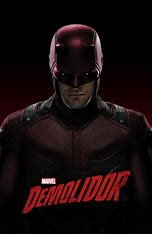

Biografia Demolidor

O Demolidor, também conhecido como Matt Murdock, é um personagem fictício da Marvel Comics criado por Stan Lee e Bill Everett. Sua biografia fictícia é a seguinte:
Origem: Matt Murdock nasceu em Hell's Kitchen, Nova York. Quando era criança, ele foi atingido por substâncias químicas radioativas que o deixaram cego, mas aumentaram seus outros sentidos de forma extraordinária.
Conquistas:
Advogado de Defesa: Matt Murdock se formou em direito e se tornou um advogado de defesa renomado, especializado em ajudar os mais vulneráveis e injustiçados.
Super-Herói: Sob o alter ego do Demolidor, ele combate o crime em Hell's Kitchen, usando suas habilidades sensoriais aguçadas e habilidades de luta excepcionais. Ele se destaca como um dos super-heróis urbanos mais conhecidos da Marvel.
Membro dos Defensores: O Demolidor é um membro fundador dos Defensores, um grupo de super-heróis que inclui personagens como o Hulk, Doutor Estranho e o Homem de Ferro, e que se unem para combater ameaças cósmicas.
Líder dos Vingadores: Em algumas histórias, o Demolidor também liderou os Vingadores, uma das equipes de super-heróis mais prestigiadas da Marvel.
O Demolidor é conhecido por suas complexas histórias de justiça, moralidade e luta contra o crime nas ruas de Nova York, e ele tem sido um personagem popular nos quadrinhos, televisão e outras mídias da Marvel.
Ler sobre mais personagens